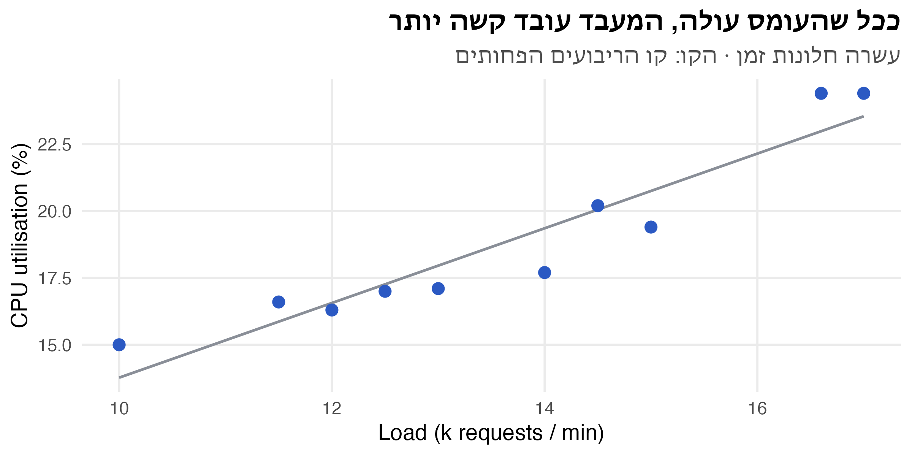
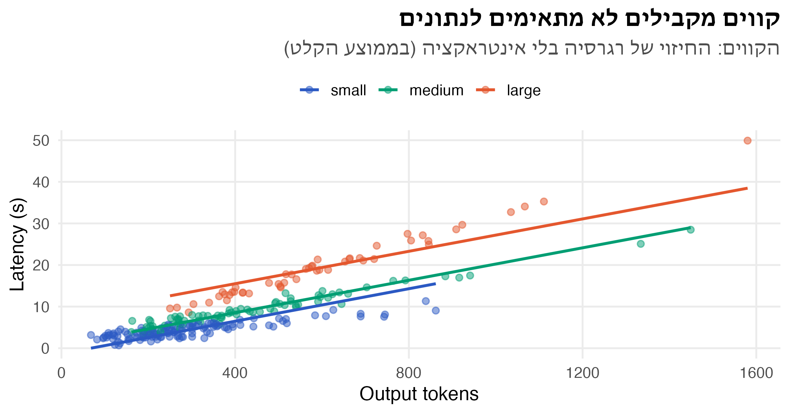
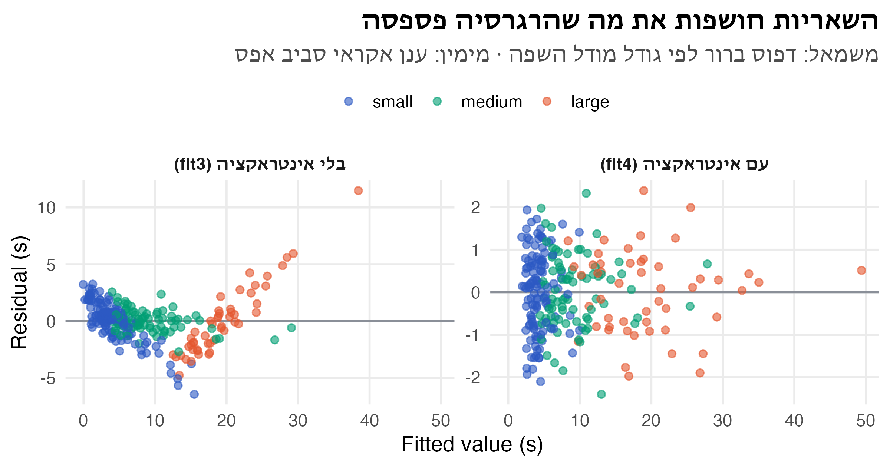
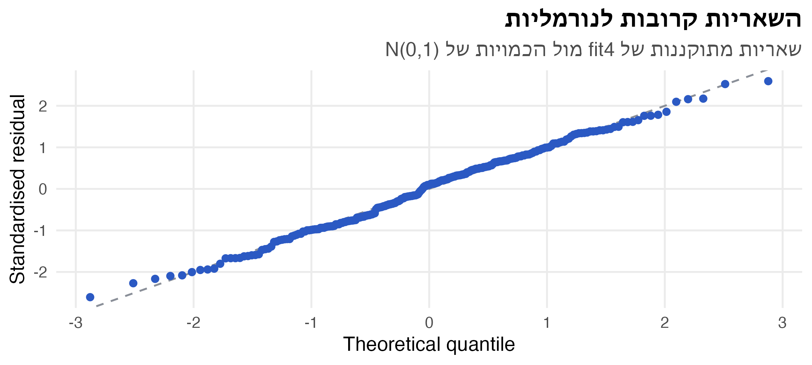
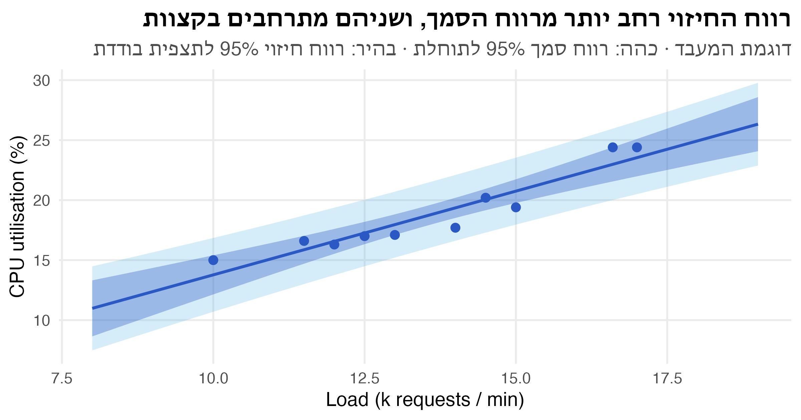

קוד
cpu <- tibble(
load = c(10, 11.5, 14.5, 12, 15, 16.6, 12.5, 13, 14, 17), # k requests / min
util = c(15, 16.6, 20.2, 16.3, 19.4, 24.4, 17, 17.1, 17.7, 24.4) # CPU %
)ניתוח נתונים סטטיסטי · הרצאה 3
ד״ר עדי שריד
3 באוקטובר 2026
צוות התשתיות מתכנן קיבולת (capacity planning) לשירות חדש. בעשרה חלונות זמן נמדדו העומס (אלפי בקשות בדקה) וניצולת המעבד (CPU, באחוזים).
השאלות: בכמה עולה ניצולת המעבד עם כל אלף בקשות נוספות בדקה? והאם הקשר הזה “אמיתי”, או שהוא יכול להיות מקרי?
ggplot(cpu, aes(load, util)) +
geom_smooth(method = "lm", se = FALSE, colour = nanas_pal[["grey"]], linewidth = 0.8) +
geom_point(size = 3) +
labs(title = "ככל שהעומס עולה, המעבד עובד קשה יותר",
subtitle = "עשרה חלונות זמן · הקו: קו הריבועים הפחותים",
x = "Load (k requests / min)", y = "CPU utilisation (%)")
\[ Y_i = \beta_0 + \beta_1 x_i + \varepsilon_i \qquad i = 1, \dots, n \]
ההנחות על השגיאות \(\varepsilon_i\):
מחפשים את הקו שממזער את סכום ריבועי הסטיות האנכיות:
\[ L(\beta_0, \beta_1) = \sum_{i=1}^{n} \left(y_i - \beta_0 - \beta_1 x_i\right)^2 \]
גוזרים לפי \(\beta_0\) ולפי \(\beta_1\) ומשווים לאפס (משוואות נורמליות), ומקבלים:
\[ \hat\beta_1 = \frac{S_{xy}}{S_{xx}} \qquad \hat\beta_0 = \bar y - \hat\beta_1 \bar x \]
\[ S_{xx} = \sum_{i=1}^{n} (x_i - \bar x)^2 = \sum x_i^2 - n\bar x^2 \qquad S_{xy} = \sum_{i=1}^{n} (x_i - \bar x)(y_i - \bar y) = \sum x_i y_i - n \bar x \bar y \]
למה דווקא ריבועים? יש קריטריונים אחרים. אפשר למזער את הסטייה המרבית (minimax), או את סכום הסטיות בערך מוחלט (least absolute deviations, שעמיד יותר לערכים חריגים). לריבועים הפחותים יש שלושה יתרונות. יש להם פתרון סגור. לפי משפט Gauss–Markov הם האומד הלינארי חסר ההטיה בעל השונות הקטנה ביותר, גם בלי הנחת נורמליות. וכשהשגיאות נורמליות, הם גם אומד הנראות המרבית.
# A tibble: 1 × 6
n x_bar y_bar Sxx Sxy Syy
<int> <dbl> <dbl> <dbl> <dbl> <dbl>
1 10 13.6 18.8 45.0 62.8 97.9\[ \hat\beta_1 = \frac{62.80}{44.99} = 1.396 \qquad \hat\beta_0 = 18.81 - 1.396 \cdot 13.61 = -0.188 \]
\[ SS_R = \hat\beta_1 S_{xy} = 87.66 \qquad SS_E = S_{yy} - SS_R = 97.91 - 87.66 = 10.25 \qquad \hat\sigma^2 = \frac{SS_E}{n-2} = 1.281 \]
\[ se(\hat\beta_1) = \sqrt{\frac{\hat\sigma^2}{S_{xx}}} = \sqrt{\frac{1.281}{44.99}} = 0.169 \qquad t = \frac{1.396}{0.169} = 8.27 \qquad R^2 = \frac{SS_R}{S_{yy}} = 0.895 \]
Call:
lm(formula = util ~ load, data = cpu)
Residuals:
Min 1Q Median 3Q Max
-1.6544 -0.7095 -0.0565 0.8273 1.4163
Coefficients:
Estimate Std. Error t value Pr(>|t|)
(Intercept) -0.188 2.324 -0.08 0.94
load 1.396 0.169 8.27 3.4e-05 ***
---
Signif. codes: 0 '***' 0.001 '**' 0.01 '*' 0.05 '.' 0.1 ' ' 1
Residual standard error: 1.13 on 8 degrees of freedom
Multiple R-squared: 0.895, Adjusted R-squared: 0.882
F-statistic: 68.4 on 1 and 8 DF, p-value: 3.43e-05Estimate: המקדמים. כל אלף בקשות נוספות בדקה מעלות את ניצולת המעבד ב-1.4 נקודות אחוז בממוצעStd. Error: שגיאת התקן של כל מקדם, \(se(\hat\beta_j)\)t value ו-Pr(>|t|): מבחן \(H_0: \beta_j = 0\), עם \(t = \hat\beta_j / se(\hat\beta_j)\) ו-\(n - 2 = 8\) דרגות חופש. לשיפוע \(p = 0.00003\), ולכן דוחים: הקשר לא מקריResidual standard error: \(\hat\sigma = \sqrt{MS_E} = 1.13\). זו הסטייה הטיפוסית של תצפית מהקו, ביחידות של \(Y\)Multiple R-squared: 89.5% מהשונות בניצולת המעבד מוסברים על ידי העומסF-statistic: מבחן לכל המודל. ברגרסיה פשוטה \(F = t^2\): \(8.27^2 = 68.4\)לשאול את הכיתה: למה החותך לא מובהק, ולמה שגיאת התקן שלו כל כך גדולה (2.3)? זה מוביל לשקף הבא.
החותך הוא הניצולת הצפויה כש-\(x = 0\), הרחק מטווח הנתונים (10 עד 17). לכן השונות שלו גדולה:
\[ V(\hat\beta_0) = \sigma^2 \left[\frac{1}{n} + \frac{\bar x^2}{S_{xx}}\right] \]
אם מחסירים מ-\(x\) את הממוצע שלו, \(\bar x = 0\), והחותך הופך ל-\(\bar y\): הניצולת הצפויה בעומס הממוצע.
Estimate Std. Error t value Pr(>|t|)
(Intercept) 18.810 0.3579 52.551 1.906e-11
I(load - mean(load)) 1.396 0.1688 8.272 3.431e-05\[ \underbrace{\sum_{i}(y_i - \bar y)^2}_{SS_T} = \underbrace{\sum_{i}(\hat y_i - \bar y)^2}_{SS_R} + \underbrace{\sum_{i}(y_i - \hat y_i)^2}_{SS_E} \]
| מקור | סכום ריבועים | דרגות חופש | ממוצע ריבועים | \(F\) |
|---|---|---|---|---|
| רגרסיה | \(SS_R\) | \(1\) | \(MS_R = SS_R / 1\) | \(MS_R / MS_E\) |
| שגיאה | \(SS_E\) | \(n - 2\) | \(MS_E = SS_E / (n-2)\) | |
| סך הכול | \(SS_T\) | \(n - 1\) |
Analysis of Variance Table
Response: util
Df Sum Sq Mean Sq F value Pr(>F)
load 1 87.7 87.7 68.4 3.4e-05 ***
Residuals 8 10.2 1.3
---
Signif. codes: 0 '***' 0.001 '**' 0.01 '*' 0.05 '.' 0.1 ' ' 1מקדם המתאם המרובה: \(R^2 = SS_R / SS_T = 87.66 / 97.91 = 0.895\)
שני הרכיבים אי-שליליים, ולכן תמיד \(0 \le R^2 \le 1\).
חברה משתמשת ב-API של מודל שפה, בשלושה גדלים: small, medium ו-large. המשתמשים מתלוננים על המתנה ארוכה.
השאלות:
הנתונים: 250 קריאות מהלוגים (נתונים מדומים). לכל קריאה: גודל מודל השפה, מספר הטוקנים בקלט ובפלט, מספר המסמכים שצורפו לפרומפט (RAG), השעה ביום, וזמן התגובה בשניות.
set.seed(303) # own seed, so edits elsewhere in the lecture don't change this example
n_calls <- 250
sizes <- c("small", "medium", "large")
median_output <- c(small = 250, medium = 350, large = 500) # tokens
sec_per_token <- c(small = 0.010, medium = 0.018, large = 0.030)
llm <- tibble(
model = factor(sample(sizes, n_calls, replace = TRUE, prob = c(0.5, 0.3, 0.2)), sizes),
rag_docs = rpois(n_calls, 3), # documents added to the prompt
input_tokens = round(300 + 550 * rag_docs + rlnorm(n_calls, log(400), 0.6)),
output_tokens = round(rlnorm(n_calls, log(median_output[as.character(model)]), 0.5)),
hour = sample(0:23, n_calls, replace = TRUE)
) |>
mutate(latency = 0.8 + 0.25 * input_tokens / 1000 +
sec_per_token[as.character(model)] * output_tokens + rnorm(n_calls, 0, 1),
latency = round(latency, 2),
input_k = input_tokens / 1000)
llm |> select(model, input_tokens, output_tokens, rag_docs, hour, latency) |> head(4)# A tibble: 4 × 6
model input_tokens output_tokens rag_docs hour latency
<fct> <dbl> <dbl> <int> <int> <dbl>
1 small 3585 155 5 21 1.71
2 large 1851 478 0 1 15.7
3 medium 3140 161 5 16 3.89
4 medium 2382 200 3 6 4.83איך נבנו הנתונים. זמן התגובה מורכב מקבוע של 0.8 שניות (רשת ותור), מ-0.25 שניות לכל אלף טוקנים בקלט (קריאת הפרומפט, prefill), ומזמן לכל טוקן בפלט שתלוי בגודל מודל השפה: 10, 18 ו-30 מילישניות. למודל השפה הגדול יש גם תשובות ארוכות יותר. מספר המסמכים משפיע על זמן התגובה רק דרך מספר הטוקנים בקלט, והשעה ביום לא משפיעה בכלל. כשקוראים את התוצאות, כדאי לבדוק כמה מהם הרגרסיה מצליחה לשחזר.
\[ Y_i = \beta_0 + \beta_1 x_{i1} + \beta_2 x_{i2} + \dots + \beta_k x_{ik} + \varepsilon_i \qquad \varepsilon_i \sim N(0, \sigma^2) \]
נתחיל משני משתנים מסבירים: הטוקנים בקלט (באלפים) והטוקנים בפלט.
\[ \mathbf{y} = X\boldsymbol\beta + \boldsymbol\varepsilon \qquad X = \begin{pmatrix} 1 & x_{11} & \cdots & x_{1k} \\ \vdots & \vdots & & \vdots \\ 1 & x_{n1} & \cdots & x_{nk} \end{pmatrix}_{n \times (k+1)} \]
ממזערים את \(L(\boldsymbol\beta) = (\mathbf{y} - X\boldsymbol\beta)'(\mathbf{y} - X\boldsymbol\beta)\). הנגזרת היא \(-2X'\mathbf{y} + 2X'X\boldsymbol\beta\), ומשווים אותה לאפס:
\[ X'X\hat{\boldsymbol\beta} = X'\mathbf{y} \quad\Longrightarrow\quad \hat{\boldsymbol\beta} = (X'X)^{-1}X'\mathbf{y} \]
[,1]
(Intercept) -1.75379
input_k 0.07958
output_tokens 0.02634הקשר לרגרסיה פשוטה. כש-\(k = 1\), המטריצה \(X'X\) היא \(\begin{pmatrix} n & \sum x_i \\ \sum x_i & \sum x_i^2 \end{pmatrix}\), ו-\(X'\mathbf{y} = \begin{pmatrix} \sum y_i \\ \sum x_i y_i \end{pmatrix}\). אלה בדיוק שתי המשוואות הנורמליות מקודם, ופתרונן נותן את \(\hat\beta_1 = S_{xy}/S_{xx}\).
\[ se(\hat\beta_j) = \sqrt{\hat\sigma^2 C_{jj}} \qquad t = \frac{\hat\beta_j}{se(\hat\beta_j)} \sim t_{n-k-1} \qquad \hat\beta_j \pm t_{1-\alpha/2,\, n-k-1} \cdot se(\hat\beta_j) \]
Call:
lm(formula = latency ~ input_k + output_tokens, data = llm)
Residuals:
Min 1Q Median 3Q Max
-12.084 -1.880 -0.418 1.786 9.959
Coefficients:
Estimate Std. Error t value Pr(>|t|)
(Intercept) -1.753788 0.725441 -2.42 0.016 *
input_k 0.079583 0.244212 0.33 0.745
output_tokens 0.026340 0.000936 28.13 <2e-16 ***
---
Signif. codes: 0 '***' 0.001 '**' 0.01 '*' 0.05 '.' 0.1 ' ' 1
Residual standard error: 3.56 on 247 degrees of freedom
Multiple R-squared: 0.762, Adjusted R-squared: 0.76
F-statistic: 396 on 2 and 247 DF, p-value: <2e-16output_tokens = 0.0263: כל טוקן נוסף בתשובה מוסיף כ-26 מילישניות, כשמספר הטוקנים בקלט קבוע. \(t = 28\), מובהק מאודinput_k: לא מובהק (\(p = 0.75\)). האם הקלט באמת לא משפיע? נחזור לזהF-statistic: 396 on 2 and 247 DF: מבחן לכל המודל. \(k = 2\) ו-\(n - k - 1 = 247\)R-squared = 0.762: שני המשתנים יחד מסבירים 76% מהשונות בזמן התגובהResidual standard error = 3.56: קריאה טיפוסית רחוקה 3.6 שניות מהחיזוי. זה הרבה, כשהחציון הוא 6 שניותinput_k יוצא לא מובהק כי המודל עדיין שגוי: הוא מתעלם מגודל מודל השפה, וכל הרעש הזה נכנס לשגיאה ומסתיר את האפקט. אל תגלו להם עדיין, זה יתגלה בהמשך.
\[ H_0: \beta_1 = \beta_2 = \dots = \beta_k = 0 \qquad H_1: \text{לפחות מקדם אחד שונה מאפס} \]
| מקור | סכום ריבועים | דרגות חופש | ממוצע ריבועים | \(F\) |
|---|---|---|---|---|
| רגרסיה | \(SS_R\) | \(k\) | \(MS_R = SS_R / k\) | \(MS_R / MS_E\) |
| שגיאה | \(SS_E\) | \(n - k - 1\) | \(MS_E = SS_E / (n-k-1)\) | |
| סך הכול | \(SS_T\) | \(n - 1\) |
דוחים את \(H_0\) אם \(F > F_{1-\alpha;\, k,\, n-k-1}\).
\[ R^2 = \frac{SS_R}{SS_T} = 1 - \frac{SS_E}{SS_T} \qquad R^2_{adj} = 1 - \frac{SS_E / (n - k - 1)}{SS_T / (n - 1)} = 1 - (1 - R^2)\frac{n - 1}{n - k - 1} \]
set.seed(8)
llm_noise <- llm |> mutate(noise1 = rnorm(n()), noise2 = rnorm(n()), noise3 = rnorm(n()))
fit_noise <- lm(latency ~ input_k + output_tokens + noise1 + noise2 + noise3, data = llm_noise)
rbind(fit2 = c(R2 = summary(fit2)$r.squared, adj = summary(fit2)$adj.r.squared),
fit_noise = c(R2 = summary(fit_noise)$r.squared, adj = summary(fit_noise)$adj.r.squared)) R2 adj
fit2 0.7622 0.7603
fit_noise 0.7628 0.7580שלושה משתני רעש העלו את \(R^2\), ו-\(R^2_{adj}\) ירד. אבל גם \(R^2_{adj}\) לא חסין: הוא עולה בכל פעם שמוסיפים משתנה שערך ה-\(|t|\) שלו גדול מ-1. למשתנה רעש זה קורה בערך בשליש מהמקרים. לכן \(R^2_{adj}\) מתאים להשוואה גסה בין מודלים, ולא כהוכחה שמשתנה שייך למודל.
פלט של רגרסיה עם \(n = 30\) תצפיות ו-\(k = 3\) משתנים מסבירים. חלק מהערכים נמחקו:
| מקור | סכום ריבועים | דרגות חופש | ממוצע ריבועים | \(F\) |
|---|---|---|---|---|
| רגרסיה | 600 | (א) | (ב) | (ג) |
| שגיאה | (ד) | (ה) | (ו) | |
| סך הכול | 860 | 29 |
השלימו את הטבלה, וחשבו את \(R^2\), את \(R^2_{adj}\) ואת \(\hat\sigma\). האם המודל מובהק ב-\(\alpha = 0.05\)? (\(F_{0.95;\,3,\,26} = 2.98\))
פתרון. (א) \(k = 3\). (ב) \(MS_R = 600/3 = 200\). (ד) \(SS_E = 860 - 600 = 260\). (ה) \(n - k - 1 = 26\). (ו) \(MS_E = 260/26 = 10\). (ג) \(F = 200/10 = 20 > 2.98\), ולכן המודל מובהק. \(R^2 = 600/860 = 0.698\), \(R^2_{adj} = 1 - \frac{10}{860/29} = 1 - \frac{10}{29.66} = 0.663\), ו-\(\hat\sigma = \sqrt{10} = 3.16\).
למשתנה קטגורי עם \(m\) רמות מוסיפים \(m - 1\) משתני דמה (אינדיקטורים). רמה אחת היא רמת הבסיס (reference level), ולה אין משתנה משלה.
\[ D_{medium} = \begin{cases} 1 & \text{medium} \\ 0 & \text{אחרת} \end{cases} \qquad D_{large} = \begin{cases} 1 & \text{large} \\ 0 & \text{אחרת} \end{cases} \]
\[ Y = \beta_0 + \beta_1 x_{input} + \beta_2 x_{output} + \beta_3 D_{medium} + \beta_4 D_{large} + \varepsilon \]
factor. רמת הבסיס היא הרמה הראשונה (levels) modelmedium modellarge
raw 4.930 15.182
adjusted 2.047 9.018השאלה: האם גודל מודל השפה משפיע בכלל? זו השערה על שני מקדמים יחד, \(H_0: \beta_3 = \beta_4 = 0\). אי אפשר לענות עליה עם שני מבחני t נפרדים.
משווים בין המודל המלא (full) לבין המודל המצומצם (reduced), שבו \(H_0\) נכונה:
\[ F = \frac{(SS_E^{R} - SS_E^{F}) / q}{SS_E^{F} / (n - k - 1)} \sim F_{q,\; n-k-1} \]
\(q\) הוא מספר המקדמים שנבדקים, ו-\(k\) הוא מספר המשתנים במודל המלא.
RSS: סכום ריבועי השגיאות (\(SS_E\)) של כל מודל. משתני הדמה הורידו אותו מ-3125 ל-911Df = 2: הוספנו \(q = 2\) מקדמים\[ F = \frac{(3125 - 911) / 2}{911 / 245} = 297 \]
ברגרסיה fit3 לכל מודל שפה יש חותך משלו, אבל אותו שיפוע: אותו זמן לכל טוקן בתשובה. זה סביר?
ggplot(augment(fit3), aes(output_tokens, colour = model)) +
geom_point(aes(y = latency), alpha = 0.5) +
geom_smooth(aes(y = .fitted), method = "lm", se = FALSE, linewidth = 1) +
scale_colour_manual(values = model_cols) +
labs(title = "קווים מקבילים לא מתאימים לנתונים",
subtitle = "הקווים: החיזוי של רגרסיה בלי אינטראקציה (בממוצע הקלט)",
x = "Output tokens", y = "Latency (s)", colour = NULL)
אינטראקציה פירושה שההשפעה של משתנה אחד תלויה בערך של משתנה אחר. כאן: הזמן לכל טוקן תלוי בגודל מודל השפה.
\[ Y = \beta_0 + \beta_1 x_{in} + \beta_2 x_{out} + \beta_3 D_{med} + \beta_4 D_{lrg} + \beta_5\, x_{out} D_{med} + \beta_6\, x_{out} D_{lrg} + \varepsilon \]
| מודל שפה | השיפוע של \(x_{out}\) |
|---|---|
| small | \(\beta_2\) |
| medium | \(\beta_2 + \beta_5\) |
| large | \(\beta_2 + \beta_6\) |
ב-R, output_tokens * model הוא קיצור של output_tokens + model + output_tokens:model.
Call:
lm(formula = latency ~ input_k + output_tokens * model, data = llm)
Residuals:
Min 1Q Median 3Q Max
-2.3999 -0.7069 0.0906 0.6431 2.3889
Coefficients:
Estimate Std. Error t value Pr(>|t|)
(Intercept) 0.917850 0.224929 4.08 6.1e-05 ***
input_k 0.220542 0.064231 3.43 0.0007 ***
output_tokens 0.009887 0.000532 18.57 < 2e-16 ***
modelmedium -0.075828 0.278457 -0.27 0.7856
modellarge -0.613472 0.384691 -1.59 0.1121
output_tokens:modelmedium 0.008135 0.000690 11.80 < 2e-16 ***
output_tokens:modellarge 0.021030 0.000749 28.09 < 2e-16 ***
---
Signif. codes: 0 '***' 0.001 '**' 0.01 '*' 0.05 '.' 0.1 ' ' 1
Residual standard error: 0.931 on 243 degrees of freedom
Multiple R-squared: 0.984, Adjusted R-squared: 0.984
F-statistic: 2.49e+03 on 6 and 243 DF, p-value: <2e-16input_k מובהק עכשיו: 0.22 שניות לכל אלף טוקנים בקלט. במודלים הקודמים הוא “הוסתר” בגלל שגיאה גדולה (\(\hat\sigma = 3.6\)). עכשיו \(\hat\sigma = 0.93\)modelmedium, modellarge לא מובהקים, אבל לא מוחקים אותם. כשיש אינטראקציה, הם ההפרש בין מודלי השפה כשאורך התשובה אפס, ולא “ההשפעה של גודל מודל השפה”bind_rows(`בלי אינטראקציה (fit3)` = augment(fit3),
`עם אינטראקציה (fit4)` = augment(fit4), .id = "fit") |>
ggplot(aes(.fitted, .resid, colour = model)) +
geom_hline(yintercept = 0, colour = nanas_pal[["grey"]]) +
geom_point(alpha = 0.6) +
facet_wrap(~ fit, scales = "free_y") +
scale_colour_manual(values = model_cols) +
labs(title = "השאריות חושפות את מה שהרגרסיה פספסה",
subtitle = "משמאל: דפוס ברור לפי גודל מודל השפה · מימין: ענן אקראי סביב אפס",
x = "Fitted value (s)", y = "Residual (s)", colour = NULL)
| מה רואים | מה זה אומר | מה עושים |
|---|---|---|
| ענן אקראי סביב אפס | ההנחות סבירות | |
| עקומה (קשת) | הקשר לא לינארי | מוסיפים \(x^2\), טרנספורמציה ל-\(x\) |
| משפך: הפיזור גדל עם \(\hat y\) | השונות לא קבועה | טרנספורמציה ל-\(Y\) (למשל \(\log Y\)) |
| קבוצות עם דפוסים שונים | חסר משתנה או אינטראקציה | מוסיפים אותם למודל |
| נקודה בודדת רחוקה | ערך חריג | בודקים אותו. לא מוחקים אוטומטית |
ועוד שתי בדיקות:
stat_qq()). עם מדגם גדול, סטיות קטנות לא מזיקות למבחניםggplot(augment(fit4), aes(sample = .std.resid)) +
geom_abline(colour = nanas_pal[["grey"]], linetype = "dashed") +
stat_qq(colour = nanas_pal[["primary"]]) +
labs(title = "השאריות קרובות לנורמליות",
subtitle = "שאריות מתוקננות של fit4 מול הכמויות של N(0,1)",
x = "Theoretical quantile", y = "Standardised residual")
גרף Q-Q הוא בדיקה בעין. אפשר גם לבדוק את הנורמליות במבחן, עם מבחן KS מההרצאה על שיטות א-פרמטריות:
\[ H_0: \text{השאריות המתוקננות מתפלגות } N(0, 1) \qquad D = \max_x \left| F_n(x) - \Phi(x) \right| \]
Asymptotic one-sample Kolmogorov-Smirnov test
data: rstandard(fit4)
D = 0.046, p-value = 0.7
alternative hypothesis: two-sidedshapiro.test()מספר המסמכים מ-RAG קובע כמעט לגמרי את מספר הטוקנים בקלט: המתאם ביניהם הוא 0.94. מה קורה כשמכניסים את שניהם?
Estimate Std. Error
fit4 0.2205 0.06423
fit5 0.4372 0.18807input_k גדלה פי 2.9. הרגרסיה לא יכולה להפריד בין שני משתנים שזזים יחדמדד VIF (Variance Inflation Factor): \(R_j^2\) הוא ה-\(R^2\) של רגרסיה של \(x_j\) על כל שאר המשתנים המסבירים.
\[ VIF_j = \frac{1}{1 - R_j^2} \]
[1] 8.672ה-VIF הוא בדיוק הפקטור שבו השונות של \(\hat\beta_j\) גדלה, לעומת מצב שבו \(x_j\) לא מתואם עם שאר המשתנים. החבילה car מחשבת אותו לכל המשתנים בבת אחת (car::vif()). כאן חישבנו אותו ידנית כדי לראות מאיפה הוא מגיע. מה עושים? משאירים רק אחד מהמשתנים המתואמים, זה שקרוב יותר למנגנון. כאן הטוקנים בקלט הם מה שהשרת מעבד בפועל, והמסמכים משפיעים רק דרכם.
קריטריונים נפוצים: \(R^2_{adj}\), ה-p-value של מבחן F חלקי, או AIC (מדד שמאזן בין טיב ההתאמה למספר הפרמטרים. קטן יותר = טוב יותר)
Estimate Std. Error t value Pr(>|t|)
-0.014070 0.008184 -1.719055 0.086883 hour נשאר במודל, אף שבסימולציה לשעה אין שום השפעה על זמן התגובה. ה-p-value שלו אפילו קרוב ל-0.05לנקודה חדשה \(\mathbf{x}_0 = (1, x_{01}, \dots, x_{0k})'\), החיזוי הוא \(\hat y_0 = \mathbf{x}_0'\hat{\boldsymbol\beta}\). יש שתי שאלות שונות:
\[ \text{CI:}\;\; \hat y_0 \pm t_{1-\alpha/2,\, n-k-1}\sqrt{\hat\sigma^2\, \mathbf{x}_0'(X'X)^{-1}\mathbf{x}_0} \qquad \text{PI:}\;\; \hat y_0 \pm t_{1-\alpha/2,\, n-k-1}\sqrt{\hat\sigma^2 \left(1 + \mathbf{x}_0'(X'X)^{-1}\mathbf{x}_0\right)} \]
ה-1 הנוסף ברווח החיזוי הוא השונות של התצפית החדשה עצמה. גם עם אינסוף נתונים הוא לא נעלם.
ברגרסיה פשוטה, \(\mathbf{x}_0'(X'X)^{-1}\mathbf{x}_0 = \dfrac{1}{n} + \dfrac{(x_0 - \bar x)^2}{S_{xx}}\): הרווחים צרים ביותר ב-\(\bar x\) ומתרחבים ככל שמתרחקים ממנו.
2,000 טוקנים בקלט, 500 בפלט, מודל השפה הגדול:
fit lwr upr
confidence 16.2 15.92 16.49
prediction 16.2 14.35 18.06החישוב הידני של רווח הסמך, עם המטריצה \(X\) של fit4:
X4 <- model.matrix(fit4)
x0 <- model.matrix(~ input_k + output_tokens * model,
data = mutate(new_call, model = factor(model, levels(llm$model))))[1, ]
h0 <- drop(t(x0) %*% solve(t(X4) %*% X4) %*% x0) # x0' (X'X)^-1 x0
y0 <- sum(x0 * coef(fit4))
t_crit <- qt(0.975, df = fit4$df.residual)
c(fit = y0, h0 = h0,
ci_half = t_crit * sigma(fit4) * sqrt(h0),
pi_half = t_crit * sigma(fit4) * sqrt(1 + h0)) fit h0 ci_half pi_half
16.20402 0.02422 0.28546 1.85618 \(h_0\) קטן מאוד (יש 250 תצפיות, והנקודה לא רחוקה מהן), ולכן רווח החיזוי נקבע כמעט כולו על ידי \(\hat\sigma\).
grid_cpu <- tibble(load = seq(8, 19, by = 0.1))
bands <- bind_cols(grid_cpu,
predict(fit_cpu, grid_cpu, interval = "confidence") |> as_tibble(),
predict(fit_cpu, grid_cpu, interval = "prediction") |> as_tibble() |>
select(pi_lwr = lwr, pi_upr = upr))
ggplot(bands, aes(load)) +
geom_ribbon(aes(ymin = pi_lwr, ymax = pi_upr), fill = nanas_pal[["sky"]], alpha = 0.25) +
geom_ribbon(aes(ymin = lwr, ymax = upr), fill = nanas_pal[["primary"]], alpha = 0.35) +
geom_line(aes(y = fit), colour = nanas_pal[["primary"]], linewidth = 1) +
geom_point(aes(load, util), data = cpu, size = 2.5) +
labs(title = "רווח החיזוי רחב יותר מרווח הסמך, ושניהם מתרחבים בקצוות",
subtitle = "דוגמת המעבד · כהה: רווח סמך 95% לתוחלת · בהיר: רווח חיזוי 95% לתצפית בודדת",
x = "Load (k requests / min)", y = "CPU utilisation (%)")
input_k נראה חסר השפעה עד שהוספנו את גודל מודל השפה והאינטראקציה. תמיד מסתכלים על השאריות| השאלה | הכלי | ב-R |
|---|---|---|
| מה הקשר בין \(Y\) לכל משתנה, כשהשאר קבועים? | \(\hat{\boldsymbol\beta} = (X'X)^{-1}X'\mathbf{y}\) | lm(y ~ x1 + x2), summary() |
| האם משתנה בודד תורם? | מבחן t, \(t_{n-k-1}\) | summary() |
| האם המודל כולו מסביר משהו? | מבחן F, \(F_{k,\,n-k-1}\) | שורה אחרונה ב-summary() |
| האם קבוצת משתנים תורמת? | מבחן F חלקי, \(F_{q,\,n-k-1}\) | anova(reduced, full) |
| משתנה קטגורי עם \(m\) רמות | \(m - 1\) משתני דמה | factor |
| האם השיפוע תלוי בקבוצה? | אינטראקציה | x * group |
| האם ההנחות מתקיימות? | שאריות, Q-Q, VIF | augment(), stat_qq() |
| מה צפוי לתצפית חדשה? | רווח סמך / חיזוי | predict(interval = ) |